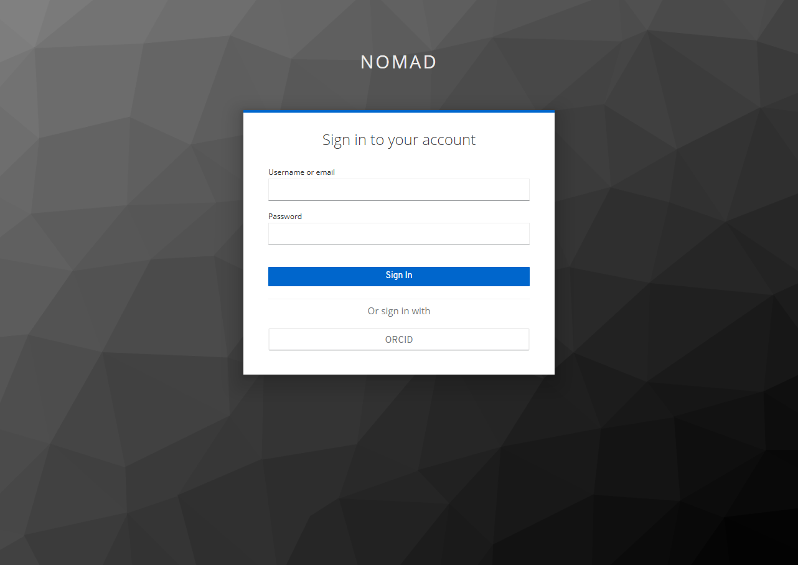
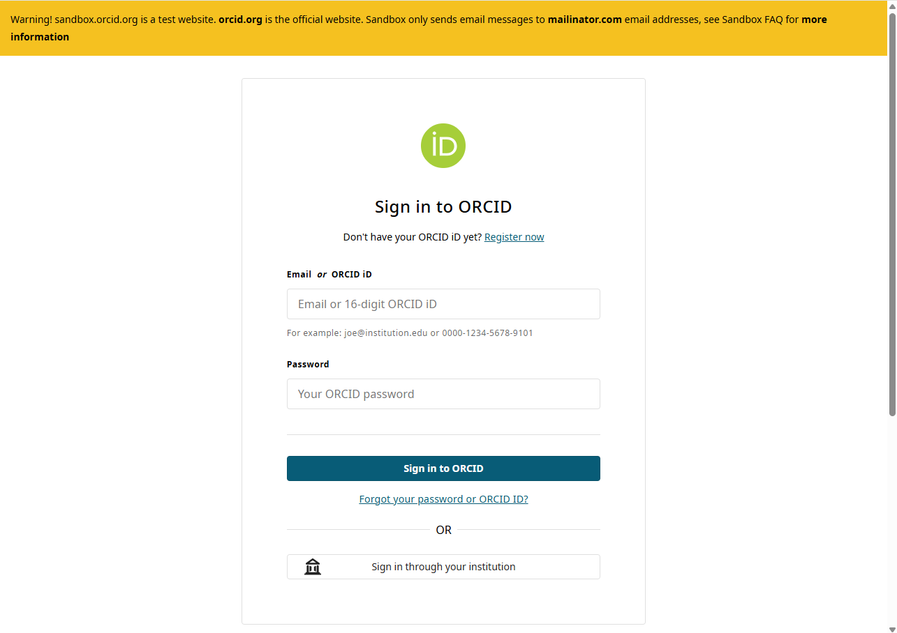
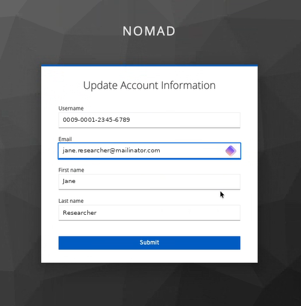
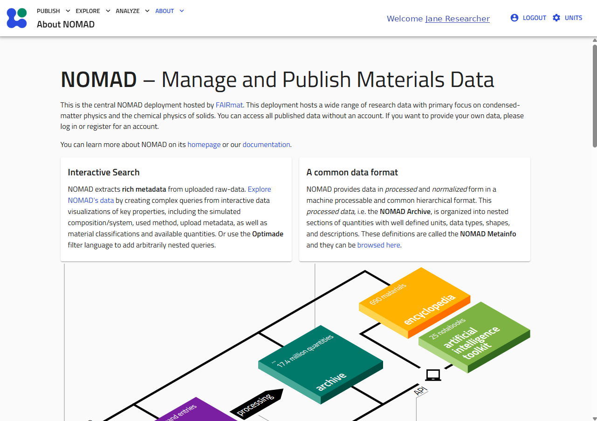

Getting Started¶
The Getting Started guide introduces the CCP-NC Database staging platform and explains how to access its features for the first time.
Most of the database can be explored without creating an account. Authentication is only required for features that modify database content, such as uploading new datasets or updating existing metadata.
This guide covers:
- Accessing the staging website
- Searching the database without logging in
- Signing in using either email or ORCID Sandbox authentication
- First-time account setup
- Logging out
- Getting help if you encounter authentication problems
Accessing the Staging Database¶
The CCP-NC Database staging website can be accessed directly from:
The landing page introduces the staging deployment and provides access to the database through the navigation bar at the top of the page.
The Explore menu provides access to the customised CCP-NC NMR App, which contains the search interface for computational NMR datasets.
Searching Without an Account¶
One of the design goals of the CCP-NC Database is to make published computational NMR data easily discoverable.
You do not need to sign in to:
- Search the database
- Explore computational records and datasets
- Download publicly available data (check license information in the ccpnc metadata of the records before reusing)
Authentication is only required for actions that modify the database, including:
- Uploading datasets
- Editing metadata of your unpublished records and datasets
Start exploring immediately
If your goal is simply to search for published computational NMR data, you can begin using the database without creating an account.
Authentication¶
The staging deployment currently supports two authentication methods:
- ORCID Sandbox authentication (recommended)
- Email authentication
Click LOGIN / REGISTER from the top navigation bar to open the authentication screen.
This takes you to the sign-in screen, where both methods are available:

Choose the tab below for the method relevant to you:
The recommended authentication method for most users is ORCID Sandbox.
Select ORCID from the sign-in screen. You will be redirected to the ORCID Sandbox website to authenticate your account.

The ORCID Sandbox sign-in page. The yellow banner confirms this is the sandbox service, not production ORCID.Because this is the staging deployment, authentication uses ORCID Sandbox rather than production ORCID accounts.
If you have not previously created an ORCID Sandbox account, you will first need to register at sandbox.orcid.org.
Your production ORCID credentials cannot be used with the staging system.
Why ORCID Sandbox?
The staging database uses the ORCID Sandbox service to allow authentication workflows to be tested without affecting users' main ORCID identities. Main ORCID authentication is not available for staging websites.
Email authentication is intended primarily for administrators and invited users.
Because this is a staging deployment, email accounts are not self-service. An administrator must create your account before you can sign in using this method.
Enter your registered email address and password directly on the sign-in screen shown above.
If you have not been issued an account, use the ORCID Sandbox Login tab instead, or contact one of the database administrators.
First-time ORCID Login¶
The first time you successfully authenticate using an ORCID Sandbox account, the database creates a local account associated with your ORCID identity.
Before completing the sign-in process, you will be asked to review your account information.

The confirmation page displays:
- ORCID identifier
- Email address
- Preferred first name
- Preferred last name
Review these details and select Submit to complete the account creation process.
This confirmation page is displayed only once. Future logins using the same ORCID Sandbox account will authenticate automatically and redirect you directly to the CCP-NC Database landing page.
After Logging In¶
After successful authentication, you are returned to the CCP-NC Database homepage.

The navigation bar now displays your authenticated session, and any features requiring authentication become available.
Logging Out¶
To end your authenticated session, select LOGOUT from the user menu in the navigation bar.
You will be returned to the public landing page.
Logging out does not affect any datasets or metadata stored in the database; it simply ends your current authenticated session.
Administrator Contact¶
If you experience problems signing in or require an email account for the staging platform, please contact one of the database administrators — see Support for current contact details.
Troubleshooting¶
I cannot log in using my production ORCID account
The staging deployment authenticates against ORCID Sandbox. Production ORCID accounts cannot be used. If necessary, create a Sandbox account at sandbox.orcid.org.
My email login does not work
Email accounts must be created by a database administrator before they can be used. If you have not received your account credentials, contact one of the administrators listed in Support.
I cannot find the upload functionality
The ability to upload datasets depends on your authentication status and account permissions. Ensure that you are signed in before attempting to upload data.
Next Step¶
Once you have successfully accessed the staging platform, continue to the Searching section to learn how to discover computational NMR datasets using the CCP-NC search interface, filter panels and global search tools.